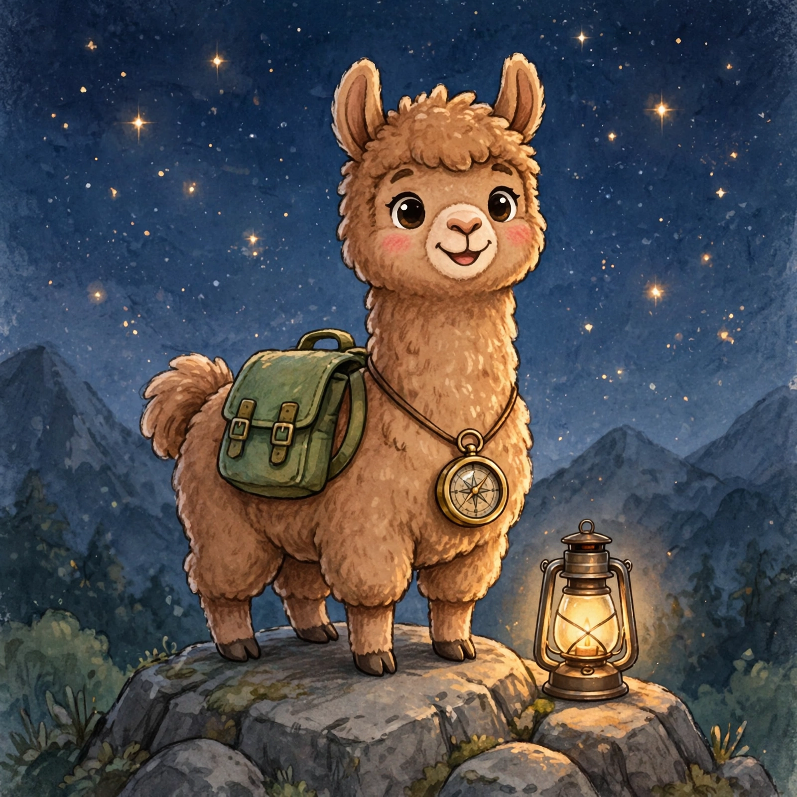
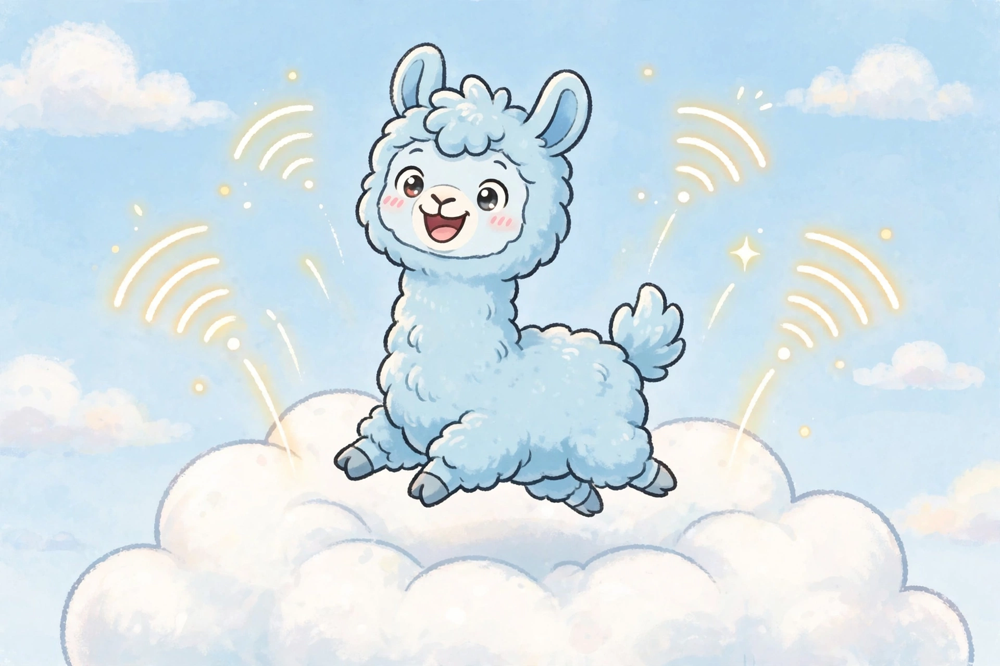
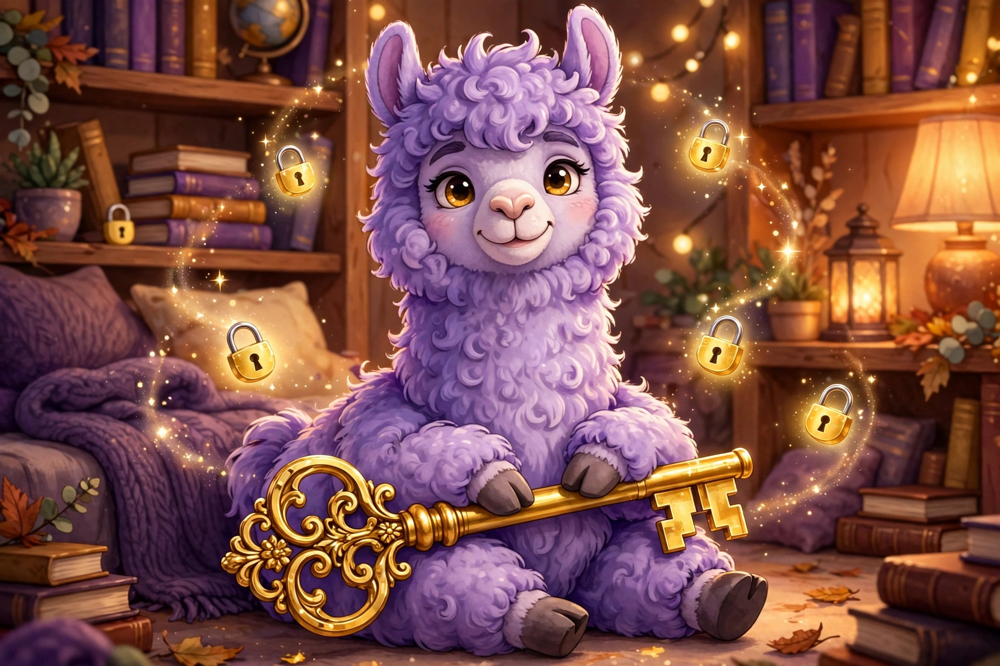
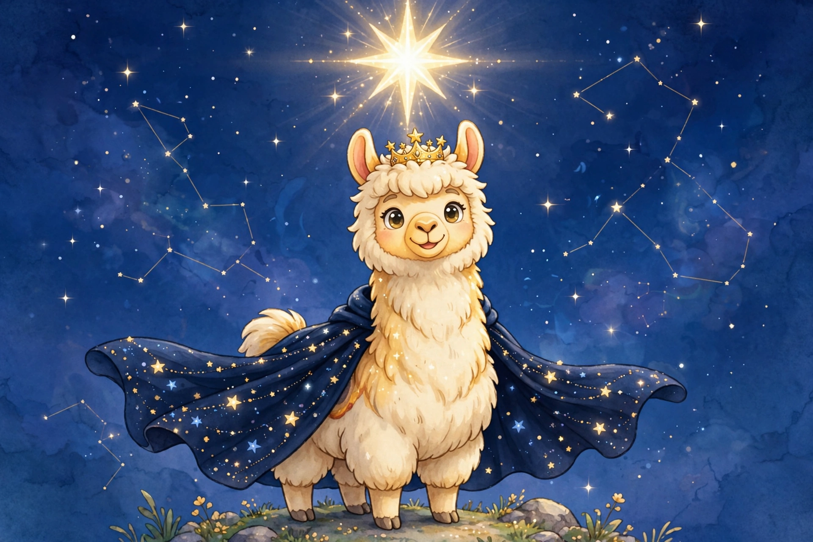

SITE 6 OF 35 · THE JAH NETWORK
PICK YOUR LLAMA · REAL DOWNLOADS · NO .EXE, EVER
One Llama, four standard builds — from the fully-offline best version to the auto-updating flagship. Every version chats in natural flowing sentences, explains everything it can do, and knows all 31 JAH network sites. Each card has its own mascot, its abilities, and real downloads: a Python package, a single-file JS build, and a thumbdrive-ready .py. Copy buttons grab the install and embed commands.
No Windows .exe is offered on this site, ever — it can’t be built on this machine, so it isn’t offered. Every download below is real, working code.

The best version. Runs fully client-side on any static page — no network needed.
The whole Llama in one package that never touches the network. Drop the JS on any static page and it chats, explains, and guides with zero servers, zero keys, zero fees. The Python package and the thumbdrive edition run anywhere Python 3 lives — copy one file to a USB stick and talk to your Llama with no install.

Online through the built-in free route. Falls back to the offline engine when offline.
Everything in Offline Static, plus a built-in free route: while you’re online it refreshes the best-pick bulletin from the live site so its answers stay current. No signup, no key, no account. Lose your connection and it quietly keeps going on the offline engine — you’ll never see an error screen.

Your own API key, your provider. Stored device-local only.
Bring your own key and your own provider — any OpenAI-compatible chat endpoint. The key is saved only on your device (in this browser’s local storage, or ~/.sigllama_key / the SIGLLAMA_API_KEY env var in Python) and is never sent anywhere except the provider endpoint you chose. If the provider fails, the offline engine answers instead — honestly labeled.

The flagship. Every feature toggleable, auto-refreshed by the updater.
The flagship build: every feature has an on/off switch (flip them below — they save on this device and apply to the downloaded JS build too), and a background updater keeps it the best version as more data lands. A daily reviewer (code/best_updater.py) compares the current pick against every new tool library and patch bundle and only promotes a new best when something genuinely better arrives — the updater below fetches that pick live.
data/best/changelog.jsonSource code, model weights, vocabularies, JSON data, downloads, docs — every public Signature Llama file as a direct link. No login, no JavaScript required. Open the public file index →
Thirty seconds, honest answer.
Still unsure? Ask the Llama on the Main page — say “which version should I pick” and it will match you up.